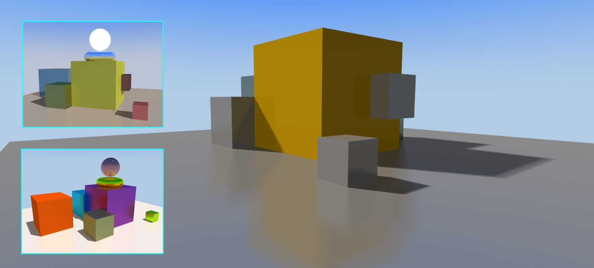

WebRay
A ray tracer written as a WebGPU compute shader. It plugs into any Babylon.js scene in three lines and traces it in real time, with soft shadows, reflections, refraction and ambient occlusion.
Features
01Compute ray tracer
One WGSL compute kernel (8×8 workgroups): ray generation with AA jitter, traversal, shading.
02SAH BVH
Built on the CPU with bucketed SAH, max 8 triangles per leaf, flattened for the GPU.
03Lighting
Soft shadows (1–8 samples), sky and ambient occlusion, emissive lights, day/night sun.
04PBR materials
Colour, roughness, metallic, transparency, IOR; glass, water and diamond presets.
05Reflection & refraction
Secondary rays with Snell's law and configurable quality.
06Temporal accumulation
Progressive refinement while still; resets automatically when the camera moves.
07Checkerboard + TAA
Half the pixels per frame, the rest interpolated and blended.
08FSR export
EASU edge-adaptive upscale plus RCAS sharpening for 1–4× high-resolution renders.
09Tooling
React control panel, material editor, OBJ import, debug views, a WGSL #include build step.
CPU prepares the scene once, the GPU traces every frame
new WebRay({ scene, light }), init(), start(), and you can toggle between the ray-traced and raster views live.What I chose, and what I didn't
| Decision | Rejected | Why |
|---|---|---|
| Compute shader tracing | Fragment-shader tracing | Storage buffers, workgroup control, write to any pixel; the natural fit for WebGPU |
| BVH | Uniform grid / k-d tree | Adapts to geometry; each triangle in one leaf; what hardware RT uses |
| Bucketed SAH (12 buckets) | Median split / full sweep | Near-optimal trees at a fraction of the build cost |
| Build on CPU, flatten to an array | Pointer tree / GPU build | Simple and correct first; flat arrays are GPU-friendly; GPU LBVH is the next step |
| Accumulation + checkerboard | More samples per frame | Clean image when still, interactive when moving, at half the cost |
| FSR only on export | Trace at full export resolution | 6144 px renders at a fraction of the rays |
Modular WGSL + #include build | One giant shader string | WGSL has no includes; modules keep it readable, circular includes detected |
Choosing a split with the surface area heuristic
A flat array and an explicit stack (no recursion on GPUs)
Checkerboard + temporal accumulation + FSR
GPU layouts: where the bytes go, and the padding I'd remove
Speed per ray
SAH BVH
Bucketed SAH, max 8 triangles per leaf; roughly O(log n) per ray instead of O(n).
Checkerboard
Half the pixels per frame; interpolated pixels blended at half weight.
Temporal accumulation
Converges when still; stops working entirely once the frame limit is reached.
Trace low, upscale smart
EASU + RCAS for 1–4× exports instead of tracing every pixel.
Cheap box tests
Inverse direction computed once per ray; the slab test becomes multiplies.
Runtime quality
Shadow, AO and reflection samples and feature toggles as uniforms, no recompiles.
Next: ordered traversal with hit-distance culling, 32-byte nodes, a GPU LBVH build (Morton codes) with a TLAS/BLAS split for moving objects, and an SVGF-style denoiser so the image is clean even while moving.